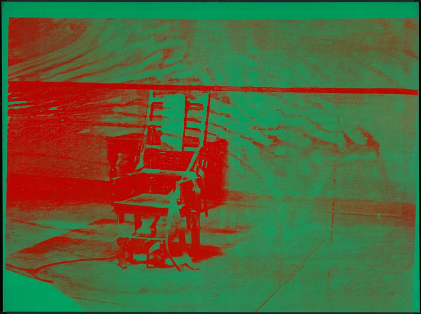

Big Electric Chair
Andy Warhol · 1967–68 · Acrylic and silkscreen ink on linen · 137.5 × 186.1 cm · Art Institute of Chicago
In copyright. Look and learn: shown for study, not for download.
Warhol obtained a photograph of an empty execution chamber, and it became the basis for his series of electric chairs. Death by electrocution was a controversial subject in New York City, where he lived and worked, especially after the last two executions at Sing Sing Correctional Facility in 1963. This canvas came to the Art Institute of Chicago as a gift of the Edlis Neeson Collection.